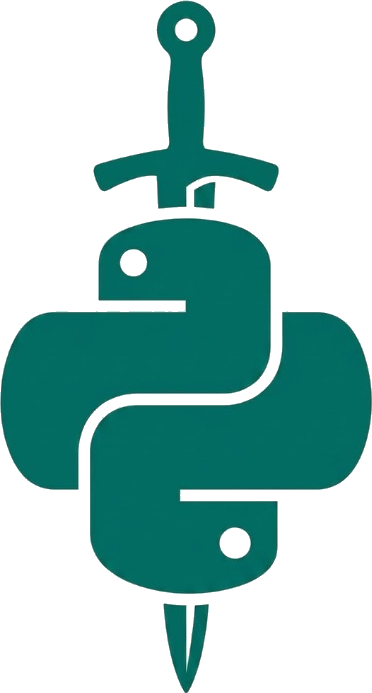

PharmaPOS – Multi-Branch POS & FEFO Analytics
Enterprise Pharmacy Point-of-Sale (POS) and inventory management system built with Python. Features multi-branch synchronization, strict FEFO (First Expired, First Out) batch deduction, bcrypt RBAC security, real-time KPI metrics with interactive Matplotlib charts, and thermal ticket printing.